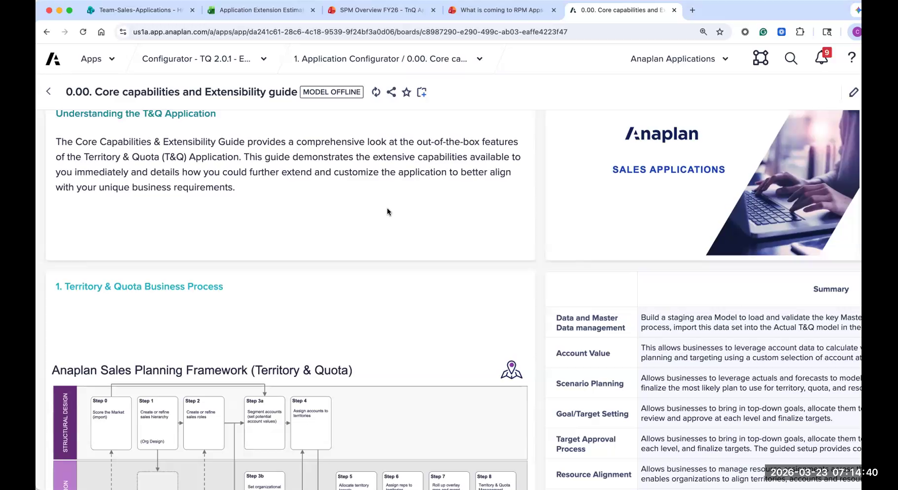
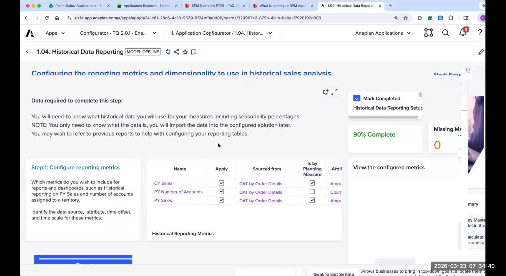
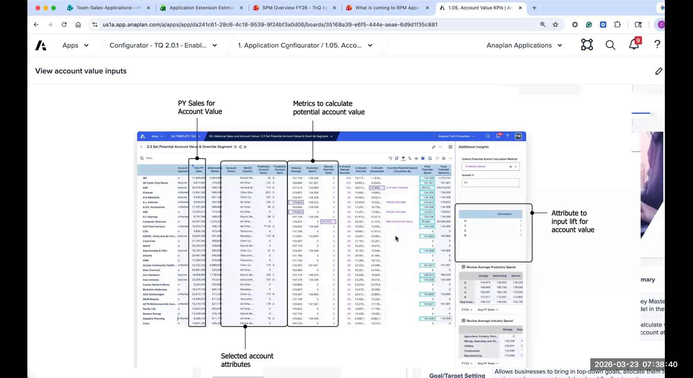
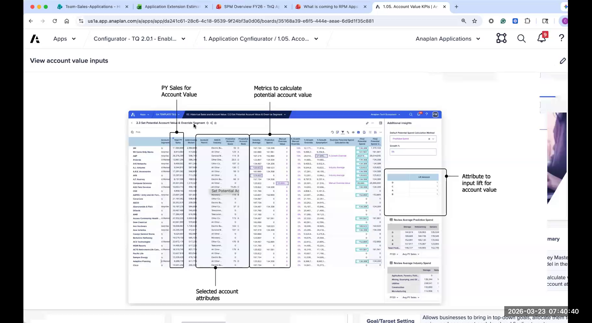
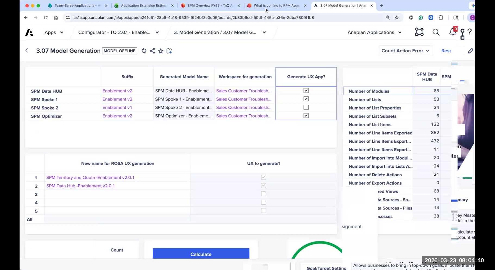

Configurator Walkthrough
All 14 configurator pages — key settings, best practices, and decision points
The T&Q Configurator is a specialized Anaplan app that drives the generation of the T&Q spoke application. Think of it as a highly sophisticated setup wizard — you work through 14 pages of settings, and when complete, the app engineering team triggers generation, producing a fully functional T&Q application pre-configured to your customer's exact specifications.
The configurator dramatically reduces implementation time compared to building T&Q from scratch. A well-run configuration process (with good data and prepared stakeholders) can be completed in 1–2 weeks of focused sessions. The quality of what comes out of generation is directly proportional to the quality of what you put into the configurator — garbage in, garbage out.
Pages are completed in order. Some pages have dependencies on earlier choices. Pay close attention to the ⭐ starred pages — these have the highest impact on the generated app and the greatest risk if misconfigured.

The Getting Started page is the initialization step. It establishes the basic project metadata and validates that the configurator workspace is properly set up before any configuration begins.
Key settings on this page:
- Customer/Project Name — used throughout the generated app for labeling
- App Version — confirm you are configuring V3 (not V2)
- Workspace validation — the configurator checks that it has sufficient workspace capacity for generation
- Configurator version — note the version number; if you encounter unexpected behavior, this helps the App Engineering team diagnose issues
Always confirm the app version before starting. V3 and V2 configurators look similar but produce very different outputs. If a customer has been given an older configurator file, get the latest version from the enablement portal before you start.

Data Hub Setup is the most important page in the configurator. The decisions here shape the entire data architecture of the generated app. Get this wrong and you face significant rework. This page should be completed in collaboration with the customer's Sales Ops and IT stakeholders.
The Three Critical Booleans:
- Use Existing Data Hub? — If the customer already has a T&Q Data Hub (e.g., from a V2 implementation or another Anaplan app), you can point the generated app at it. If not, the configurator generates a new Data Hub. Be careful with V2 upgrades — the V3 Data Hub structure is different.
- Use ADO? — Enables the Anaplan Data Orchestrator integration for data feeds. Strongly recommended for new V3 implementations. See the ADO Integration section for details.
- Use Flat File Imports? — Enables flat-file (CSV/Excel) based data loading as the primary integration method. Common for customers who aren't ready for ADO or have simple data requirements.
Attribute Setup:
The Data Hub Setup page also controls which account and territory attributes are surfaced in the app. Attributes are the descriptive fields attached to accounts (e.g., Industry, Segment, Region, Employee Count) that can be used for segmentation, filtering, and rule engine logic.
- The configurator comes pre-populated with 20 standard attributes — review these with the customer and enable only what they actually use
- Adding unnecessary attributes bloats the Data Hub and slows imports — keep it lean
- Custom attributes can be added (within limits) if the standard list doesn't cover a customer need
The Data Hub structure is extremely difficult to change post-generation. If you enable ADO here but the customer later decides they want flat files (or vice versa), you're looking at a re-generation. Lock this down before moving forward. Get sign-off from both Sales Ops and IT.


Hierarchy Setup defines the structure of the territory hierarchy — how many levels, what they're called, and how they roll up. This is one of the most customer-specific pages in the configurator.
Key settings:
- Number of hierarchy tiers — how many levels from the top of the org to the individual territory (typical range: 3–5 tiers)
- Tier names — what each level is called at the customer (e.g., Global → Area → Region → Territory, or Country → District → Territory)
- Roll-up behavior — how targets and actuals aggregate up the hierarchy
- Fiscal year settings — calendar year vs. fiscal year, fiscal year start month
- Time granularity — annual, quarterly, monthly planning periods
Validate tier count against the customer's actual data. It's common for customers to think they have 4 tiers but actually have 3 or 5 when you look at the data. Count the levels in the sample data, not the org chart. An extra tier you don't need adds complexity; a missing tier is a major structural problem post-gen.

This page controls how transactional (actuals) data flows into the app. Specifically, it defines where historical sales data comes from and how it is routed to territories for reporting and comparison purposes.
Key settings:
- Source of actuals — CRM (Salesforce, SFDC), ERP, Data Warehouse, or flat file
- Routing method — should actuals route by account, by territory, or by rep? This depends on the customer's source data structure.
- Account-to-territory mapping — how the system determines which territory an account (and its revenue) belongs to
- Historical periods to include — how many years of actuals to load (impacts Data Hub size)
Many customers have actuals at the rep level in their CRM, not the account level. If rep-level data is all that's available, the routing logic needs to account for this — and it means territory reassignments won't retroactively re-route historical actuals. Set this expectation early.

Planning Measures define the metric(s) that the T&Q app will plan against — the things reps will be measured on (e.g., Revenue, ARR, New Logos, Units). This is the second most critical page in the configurator, and it is very hard to change post-generation.
Get this right. Get sign-off. Don't guess.
Key settings:
- Primary planning measure — the single main metric (usually Revenue or ARR). Every target, quota, and approval workflow will center on this measure.
- Secondary planning measures — additional metrics that run alongside the primary (e.g., Units, New Logos, Services Revenue). Each adds a layer of complexity — only include what the customer will actually plan.
- Measure names and labels — what these measures are called in the customer's terminology (not generic "Measure 1")
- Measure type — currency, count, percentage — this drives formatting and aggregation behavior
- Seasonality curves — can each measure have a seasonality pattern applied? (e.g., Q4-heavy revenue)
Adding a planning measure post-generation requires significant rework — the measure must be manually added to dozens of modules, dashboards, and actions. If the customer says "we might want to add a New Logo measure later," add it now as inactive rather than skipping it. Removing an unused measure is trivial; adding one is expensive.
Every additional planning measure adds a dimension to the app's core modules. Three measures is manageable. Five measures starts to create performance and usability issues. Push back on customers who want to plan 6+ measures — ask which ones they'll actually enter data for from day one of go-live.
The Optimizer is an optional T&Q feature that uses Anaplan's optimization engine to automatically suggest territory carve-outs and account assignments based on defined balance criteria (e.g., equalize revenue potential, minimize rep travel distance). This page controls whether the Optimizer is included and how it is configured.
Key settings:
- Enable Optimizer? — Boolean toggle. Only enable if the customer has a clear use case for automated territory balancing.
- Optimization objective — what the optimizer is trying to balance (revenue potential, account count, travel distance/geo)
- Constraints — limits on how much the optimizer can move accounts (e.g., no territory can be more than 120% of the average)
- Number of scenarios — how many parallel what-if scenarios the optimizer can run
The Optimizer is a powerful feature, but it's not universally applicable. Customers with geographic territories (field sales) benefit most. Customers with named account models or highly relationship-driven selling often find the optimizer less useful because they don't want accounts automatically reassigned. Always validate the use case before enabling.

Historical Reporting controls what prior-year data is surfaced in the app for context and comparison. This is useful for "prior year actuals" views alongside current-year targets and quotas.
Recommendation: Keep this minimal. Historical reporting modules add significant size to the generated app and often provide marginal value. Most customers want to see 1 year of prior actuals for comparison — rarely more.
Key settings:
- Number of historical periods — how many prior years/quarters to include (recommend: 1 year max)
- Reporting measures — which measures to include in historical views (should match planning measures)
- Territory alignment — historical actuals aligned to current territory structure vs. historical structure (usually current — avoids a complex alignment problem)
Start with minimal historical reporting. You can always load more data, but you can't easily remove modules from a generated app. If a customer insists on 3 years of history, make sure they have clean, formatted data for all 3 years before generation. Dirty historical data is a nightmare to clean post-gen.

This page defines how account-level value (revenue potential, addressable market, current spend) is captured and mapped to territories. Account Values are a key input to both the Optimizer and the Territory Sizing dashboards.
Key settings:
- Account value metrics — which value fields are loaded with accounts (e.g., Current Revenue, Potential Spend, Employee Count, Contract Value)
- Value source — CRM fields, manual load, or derived from historical actuals
- Mapping method — how accounts are mapped to territories (account code, postal code/geo, manual assignment, rule engine)
- Multi-territory accounts — can a single account span multiple territories? (important for global/named account customers)
Account value data quality is one of the biggest risk factors for T&Q implementations. Many customers have account data that is incomplete, stale, or inconsistently formatted. Invest time during Session Zero validating the account file — size, coverage, and value field completeness — before committing to a go-live date.

Target & Allocation is the third critical page. It controls how Finance targets flow into the app and how they are distributed down the territory hierarchy. This is the core financial planning logic of T&Q.
The 3-Step Target Process
Key settings:
- Target entry tier — at which hierarchy level does Finance enter targets? (usually top 1–2 levels)
- Allocation methods available — which allocation algorithms are enabled in the app
- Over-allocation settings — max over-allocation %, warning thresholds
- Approval required? — does target allocation require approval before it flows to quotas?
- Adjustment reasons — preset list of reasons a manager can use when manually overriding an allocation
Do not add unnecessary dimensions to the target/allocation modules. Every extra dimension (additional planning measure, additional time period, additional hierarchy level) multiplies the size of the allocation modules exponentially. This is a common source of performance problems and workspace overages. Only include dimensions you will actually use.

Territory Assignment configures how accounts are assigned to territories — one of the most operationally important workflows in the app. The configurator controls which assignment methods are available and how the assignment process is governed.
Assignment methods (configure which to enable):
- Manual Assignment — Sales Ops manually assigns each account to a territory. Simple, full control, time-intensive for large account lists.
- Geographic Mapping — Accounts are assigned based on postal code or geographic region mapping. Good for geo-defined territories.
- Rule Engine — Accounts are assigned based on defined rules (e.g., all accounts in Industry = "Healthcare" AND Employee Count > 500 → Territory X). Powerful but requires well-structured attribute data.
- Optimizer — Automated optimization-based assignment (requires Optimizer to be enabled on Page 6).
Other key settings:
- Reassignment governance — who can reassign accounts, and is approval required?
- Split accounts — can an account be split across multiple territories?
- Unassigned account handling — what happens to accounts with no territory match?

Resource Assignment controls how sales reps (Resources) are assigned to territories, and how those assignments translate into quota calculations. This is where the link between territories and people is defined.
Key settings:
- Assignment type — full territory (one rep owns 100%) vs. split (multiple reps share a territory with defined percentages)
- Ramp rates — new hire ramp schedules (e.g., a rep in month 3 of their first year carries 60% of a full quota)
- Overlay reps — specialist or overlay reps who cover accounts across multiple territories (SE overlays, product specialists, etc.)
- Multiple assignments — can one rep be assigned to multiple territories? (yes, and this is common)
- Headcount tracking — does the app track open vs. filled territory headcount?
The ramp rate setup is a frequent source of confusion. Confirm with the customer exactly how they calculate ramp — monthly ramp tables, a fixed percentage by tenure-quarter, or full quota from day one. Get a concrete example before configuring.
Target Approval configures the approval workflow for targets and quotas. This governs how targets flow from Finance → Sales Leadership → Sales Ops → Reps, with required approvals at each stage.
Key settings:
- Enable approval workflow? — Boolean. Only enable if the customer has a defined approval process. Adding approval without a defined process creates friction.
- Approval stages — how many approval stages (e.g., Regional Manager → VP of Sales → Sales Ops)
- Approval by level — which hierarchy levels require approval (approve at Region? At Territory? Both?)
- Override with reason — can approvers override allocations, and must they provide a reason?
- Notification settings — email notifications for pending approvals (requires Anaplan CloudWorks or Action Hub)
Keep the approval workflow simple. Complex multi-stage approval chains sound good in design but often break down in practice. A 2-stage workflow (manager approves, VP locks) covers 90% of use cases. Start simple and extend if needed — adding stages post-gen is manageable.
Account Capacity modules allow the app to estimate how much revenue potential a territory "can hold" based on the accounts assigned to it — comparing territory carrying capacity to the target allocated. This is a territory sizing and fairness feature.
Key settings:
- Enable Account Capacity? — Optional module. Enable only if the customer actively wants to use potential-based territory sizing.
- Capacity metric — what defines capacity? (Addressable Market, Potential Spend, Customer Employee Count, etc.)
- Capacity vs. Target comparison — how does the app signal when a territory is over- or under-targeted relative to its potential?
Account Capacity is a compelling feature for customers who want data-driven territory sizing. However, it only works if account-level potential data is clean and up-to-date. If the customer's account data is incomplete or stale, skip this for now and revisit in a Phase 2.
The Rule Engine is the automated account assignment logic that evaluates account attributes against defined rules to suggest or execute territory assignments. This is one of the most powerful — and most complex — features in T&Q.
Key settings:
- Enable Rule Engine? — Boolean. Only enable if the customer has structured attribute data and a desire to automate account assignments.
- Rule attributes — which account attributes can rules be based on (must be a subset of attributes enabled in Data Hub Setup)
- Rule priority — when multiple rules match an account, which takes precedence?
- Auto-apply vs. suggest — does the rule engine automatically assign accounts, or does it produce suggestions for Sales Ops to review?
- Conflict handling — what happens when an account matches no rule, or matches multiple conflicting rules?
The Rule Engine is only as good as the attribute data. If account attributes are sparse, inconsistent, or missing, the Rule Engine will produce poor results. Before enabling, spot-check: what percentage of accounts have values for the attributes you plan to use in rules? If it's below 70%, the Rule Engine will leave too many accounts unassigned and create more work, not less.

Completion & Generation
Once all 14 pages are completed and reviewed, the configurator provides a summary view showing the configuration choices and any remaining items that need attention before generation can proceed.
Pre-generation checklist:
- All 14 pages marked complete (no incomplete required fields)
- Red-tab decisions finalized and signed off by the customer
- Data Hub Setup, Planning Measures, and Target & Allocation reviewed one final time
- Workspace has sufficient capacity (the App Engineering team validates this)
- A generation time has been scheduled with Chan/John — plan for 2–3 hours of their time
- Customer stakeholders are available post-generation for the initial data validation session
Run a "configuration review" session with the full project team 1–2 days before generation. Walk through every page together and verbally confirm each major decision. This is your last chance to catch mistakes before 8,000 objects are created. It usually takes 60–90 minutes and is always worth it.

You've reviewed all 14 configurator pages. Before moving to the exercise:
- Which two pages do you think will cause the most confusion for a customer in a live configuration session?
- What question would you ask a customer before touching the Data Hub Setup page?
- Flag any page where you're unsure about the impact of a setting — write it down and ask during the debrief.
Next: Complete the Configurator Lab Exercise →